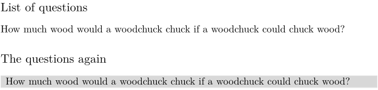

Syntax (autogenerated)
| \setupblock[...,...][...=...,...] | |
| [...,...] | name |
| before | command |
| after | command |
| left | command |
| right | command |
| alternative | paragraph text |
| inner | command |
| setups | name |
| align | see \setupalign |
| style | style command |
| color | color |
Syntax
| \setupblock[...,...,...][...,...=...,...] | |
| [...,...,...] | name |
| before | command to place before each block, e.g. \startnarrower |
| after | command to place after each block, e.g. \stopnarrower |
| inner | command to perform in each block |
| style | normal bold slanted boldslanted type cap small... command |
| file | file in which to look for the blocks when displaying them. |
Description
Setup how blocks are displayed.
Example
-
\defineblock[question] \keepblocks[question] % We want to display blocks where we define them. \setupbackground[background=color, color=red] \subject{List of questions} \beginquestion How much wood would a woodchuck chuck if a woodchuck could chuck wood? \endquestion \subject{The questions again} \setupblock[question][ %% if we had a file my_questions.tex containing \beginquestions, we would use: % file=my_questions, % (works only under mkii?) before=\startbackground, after=\stopbackground, inner=\margintitle{again} ] \useblocks[question]
This gives:
- 
See also
- \defineblock to define a new kind of block.
- \setupblock to set up block style.
- \keepblocks to start displaying blocks where they are defined.
- \hideblocks to stop displaying blocks where they are defined.
- \useblocks to display blocks.
- \selectblocks to display only blocks mentioned in the current section.
- \processblocks to process blocks without printing them.
- \forceblocks
- \nomoreblocks to allow one-pass compilation under certain conditions.
Help from ConTeXt-Mailinglist/Forum
All issues with: